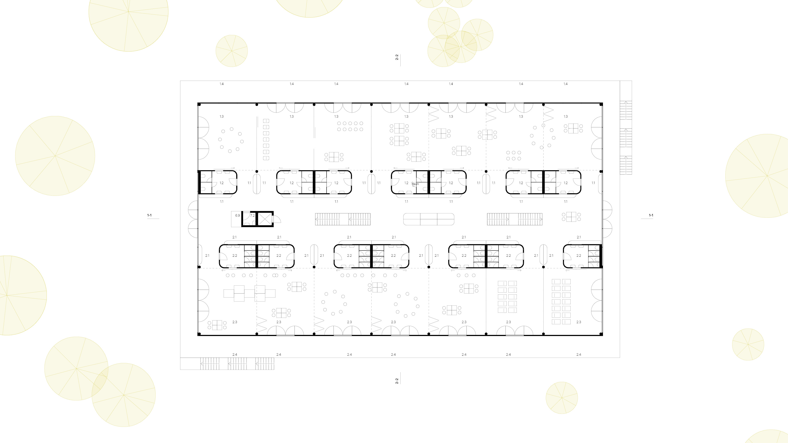
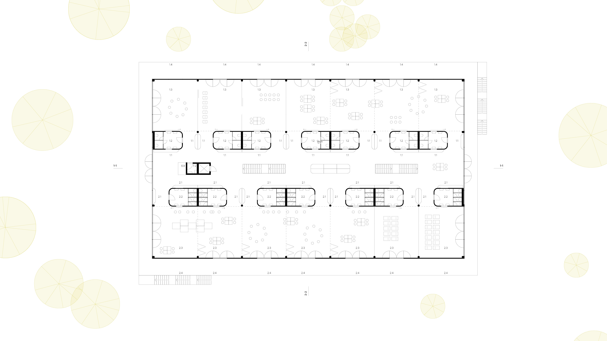
 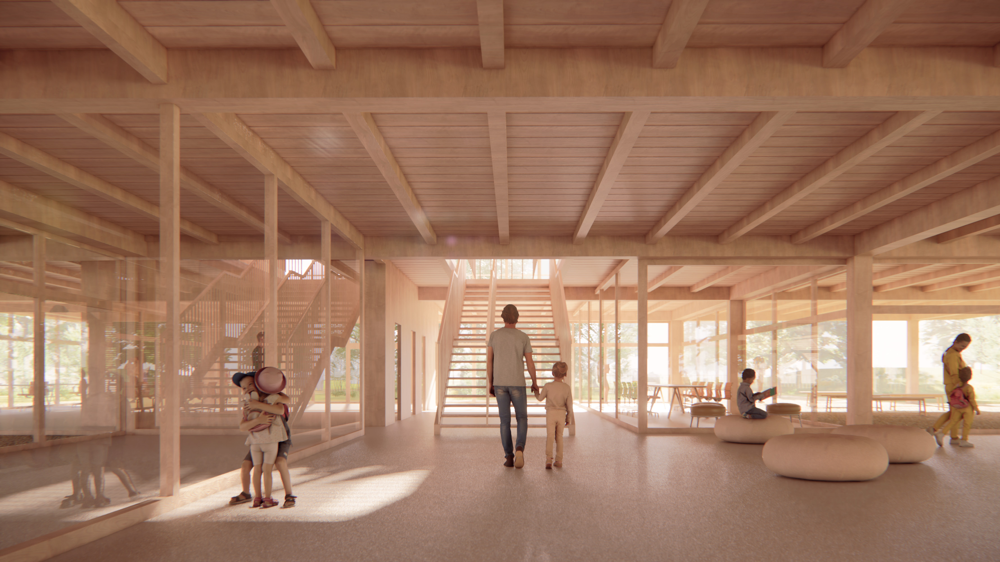
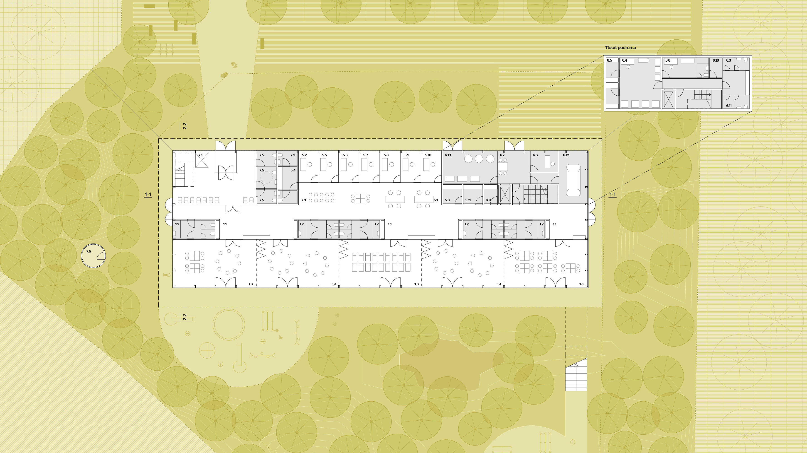
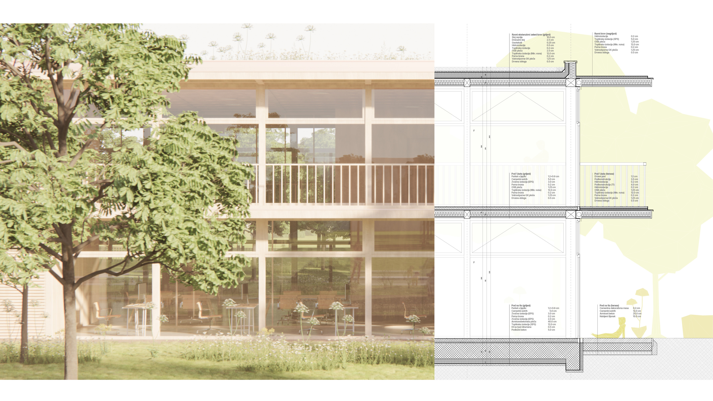
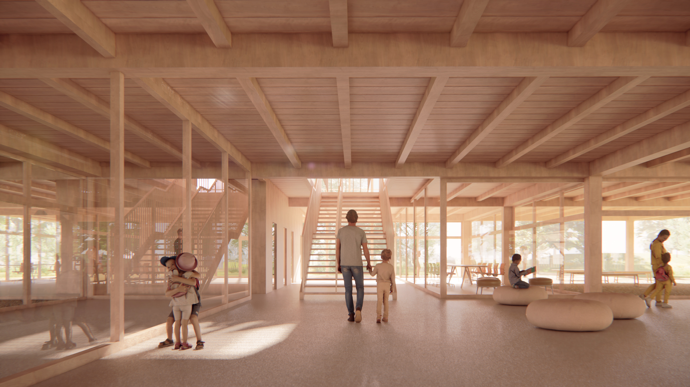
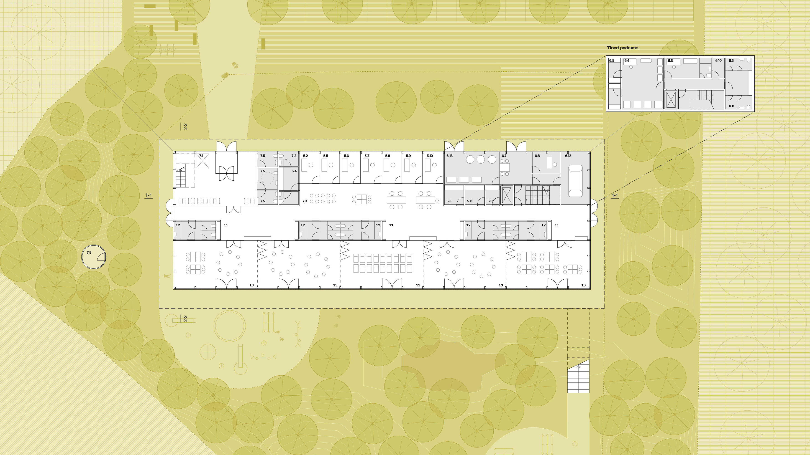
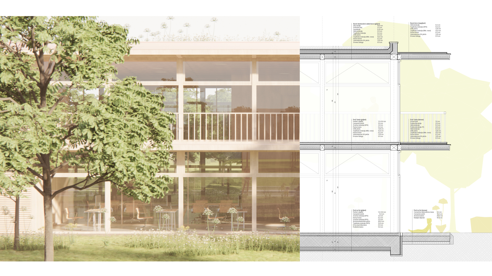


 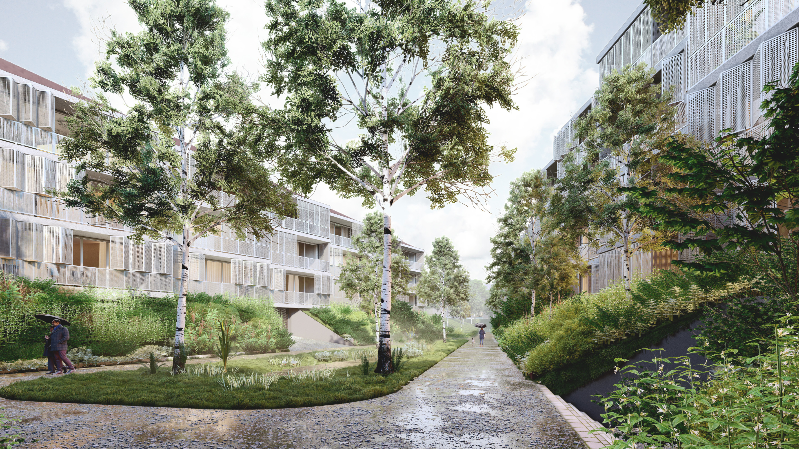
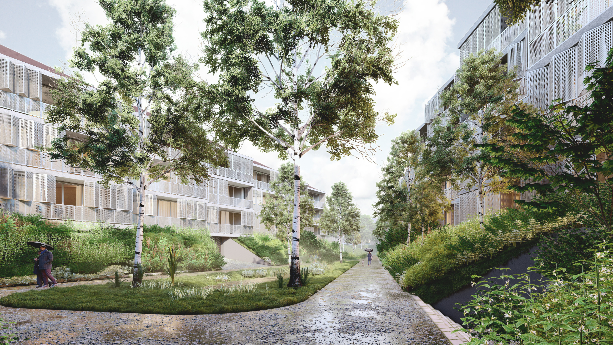


 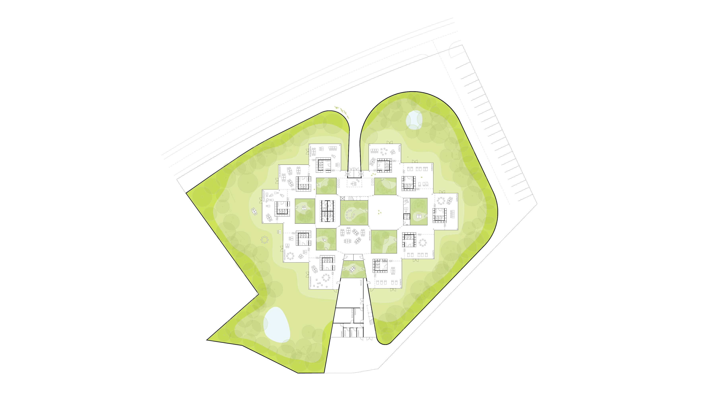
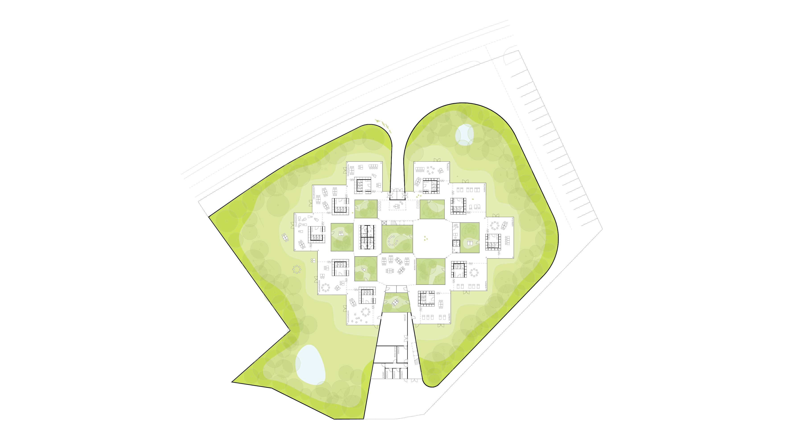


 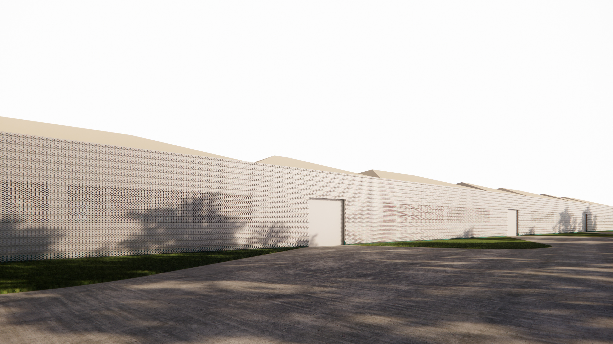
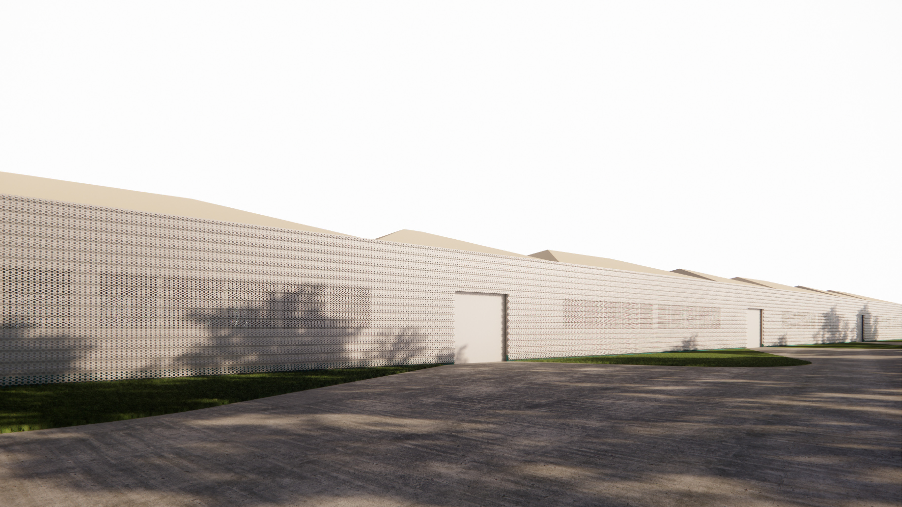


 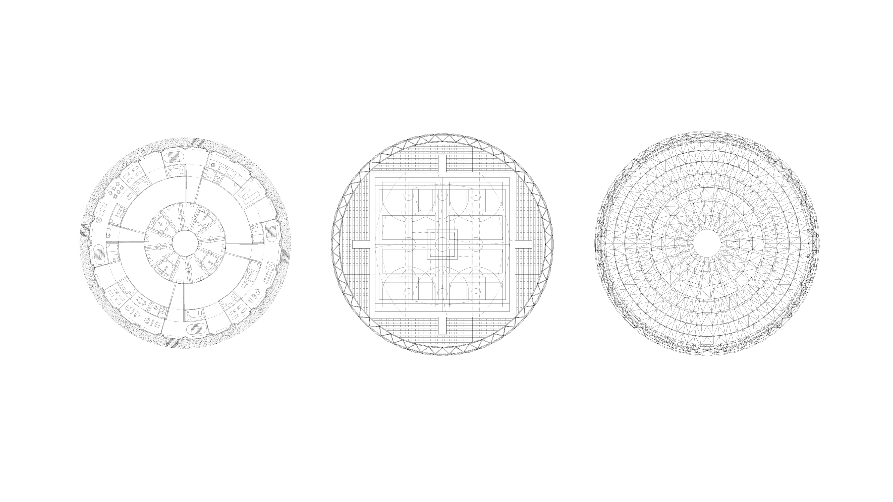
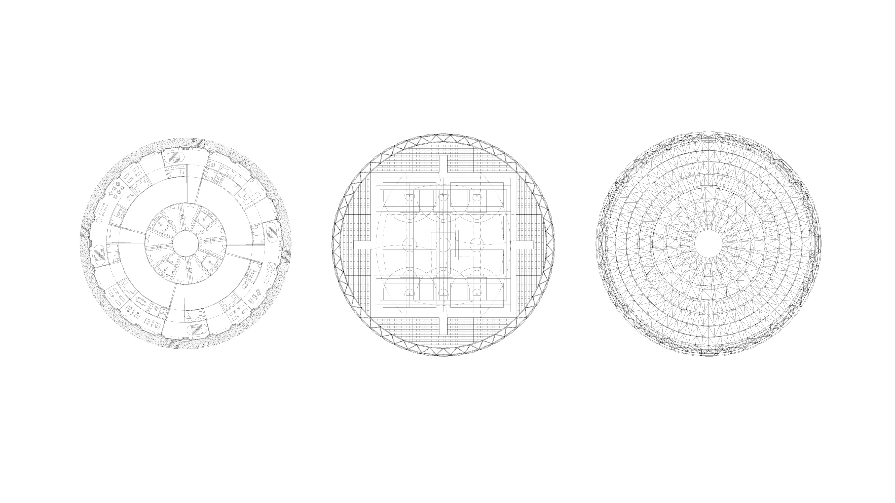


Lebenslauf
Kontaktdaten
Name: Juraj Božić, mag.ing.arch.
Adresse: Hamburg
E-Mail: juraj.bozic@outlook.com
Linkedin: www.linkedin.com/in/juraj-bozic
Akademische Ausbildung
2014–2017 Master in Architektur und Stadtplanung: Universität Zagreb, Fakultät für Architektur und Stadtplanung
2013–2009 Bachelor in Architektur und Stadtplanung: Universität Zagreb, Fakultät für Architektur und Stadtplanung
2005–2009 Humanistisches Gymnasium: Sisak, Kroatien
Arbeitserfahrungen
2024–2025 Studio Andreas Heller, Hamburg: Architect
2022–2024 SKAI Architekten, Hamburg: Teil des Akquise-Teams
2018–2022 3E Projekti, Zagreb: Projekt- und BIM-Manager
2017–2018 KAP4, Zagreb: Erstellung von BIM-Modellen
2013–2014 2K Arhitekti, Zagreb: Architekturpraktikant
Architekturpreise
2024 6. Preis, Kindergarten: Zagreb, Sloboština, Autorenarbeit
2023 1. Preis, Nachbarschaft: Morsbach, Bahnareal, SKAI Architekten
2023 2. Preis, Nachbarschaft: Howacht, WB Strandstraße, SKAI Architekten
2023 2. Preis, Zukunftszentrum Studium: Frankfurt Oder, SKAI Architekten
2019 5. Preis, Schwimmbad: Zagreb, Autorenarbeit
2018 4. Preis, Gebäude mit gemischter Nutzung: Zagreb, BHB, Autorenarbeit
2017 Rektorenpreis: Projekt zur Reaktivierung der Innenhöfe von Zagreb
Kompetenzen
Entwicklung städtebaulicher und architektonischer Projekte von LPh 1–3
Arbeiten in BIM-Programmen
Erstellen von Visualisierungen und Videos: Enscape und Lumion
Programme
Revit, Lumion, Enscape, SketchUp, AutoCAD, Vectorworks, Photoshop, InDesign, Rhino, Archicad
Sprachen
Kroatisch (Muttersprache), Englisch (C1), Deutsch (B2)